速览
做完《超级豪华版》后，1996 年 N64 时代来临。他独自用 SGI 工作站 + Softimage 学习模型、动作、镜头、渲染，然后提出两个 N64 企划：一个是无体力条的四人对战格斗（大乱斗原型），一个是用监视摄像头推进的遥控机器人冒险。两者都做了原型——企划、美术、模型、动作由他做，程序由岩田聪先生（另有一位负责声音）。原型通称《格斗游戏 龙王》，虽然还没有必杀技和道具，规则已与大乱斗几乎一样，有 Smash 攻击、空中跳跃、护盾、冲刺等。两个原型都获好评，于是「等待时机」——即等员工空出来。当时公司内多款作品（如 64DD 的《MOTHER3》、雪板风格的《Air Ride》）纷纷未能发售，急需尽快完成作品；遥控冒险认真做要两年，于是选了更快能完成的四人格斗。大乱斗常被说是「格斗游戏的反命题」，但他并非否定格斗游戏——那是博弈发挥到极致的类型。他只是认为连招不是博弈：从第一击起能否接好攻击的玩法里，没有对手技术的介入；连招重视的游戏增加，新手只能旁观挨打。他想要更多互相试探与临场发挥，结果诞生了累积伤害系统：对手每次反应都不同，飞出画面就输。当时指令输入也极度复杂，于是目标是用方向+按键直觉操作；为 N64 摇杆想出了「弹（Smash）输入」——别人着眼于无段方向和倾斜深度，他着眼于输入完成的时间。任天堂角色登场不在原企划书里，是后来谈下来的：家用格斗的难点是一开始就有一堆陌生主角，玩家难以亲近，所以借用人气角色。但完成时营业与批发商反感「任天堂角色互殴」，熟悉传统格斗的人也难以接受；发售后才凭口碑慢慢扩散。这也是他首个起用声优的作品，卡比的官方声音在此决定。规则可宽松也可严格——想玩的部分按想玩的方式玩，初代就已确立。
1. N64 时代与两个企划 0:00
《超级豪华版》后，1996 年 N64 时代来临。他独自学习 3D：在 SGI 机器上用 Softimage 学模型、动作、镜头、渲染。
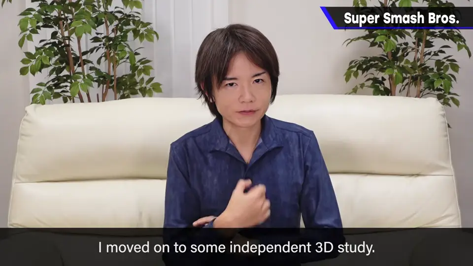
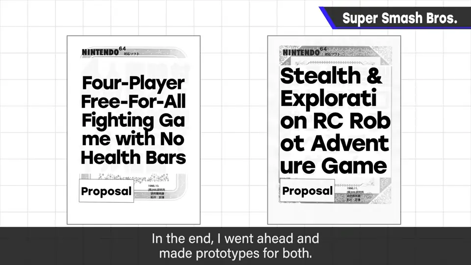
为 N64 提出两个企划：无体力条的四人对战格斗（大乱斗原型），以及用监视摄像头推进的遥控机器人冒险。
2. 原型「格斗游戏 龙王」 1:06
两个都做了原型：企划/美术/模型/动作是他，程序是岩田聪先生，另有一人负责声音。
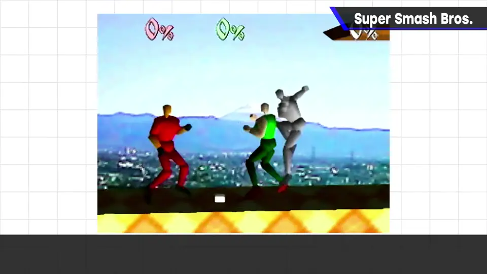
还没有必杀技和道具，但规则几乎就是大乱斗：Smash 攻击、空中跳跃、护盾、冲刺、空中攻击……模型构成非常受限，但确实动起来了。
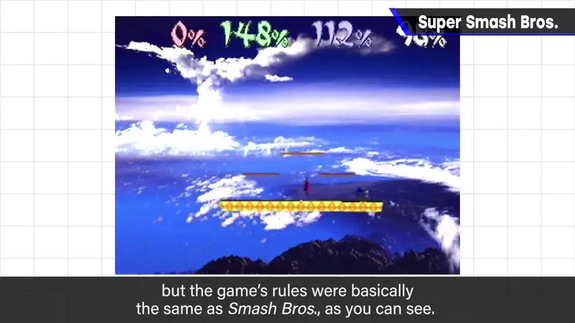
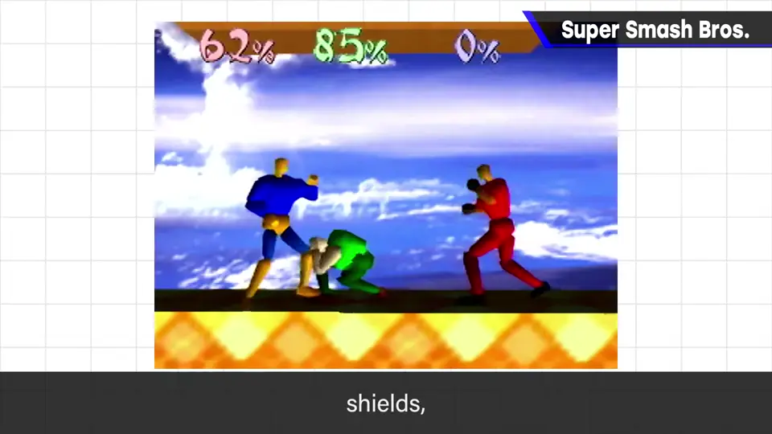
3. 为什么选了格斗 2:08
两个原型都获任天堂好评，于是「等待时机」——员工都在做别的作品。之后多款作品纷纷未能发售，需要尽快完成一款。
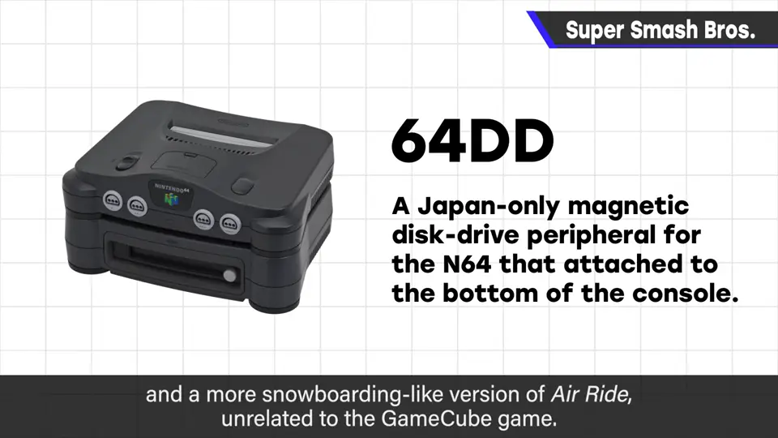
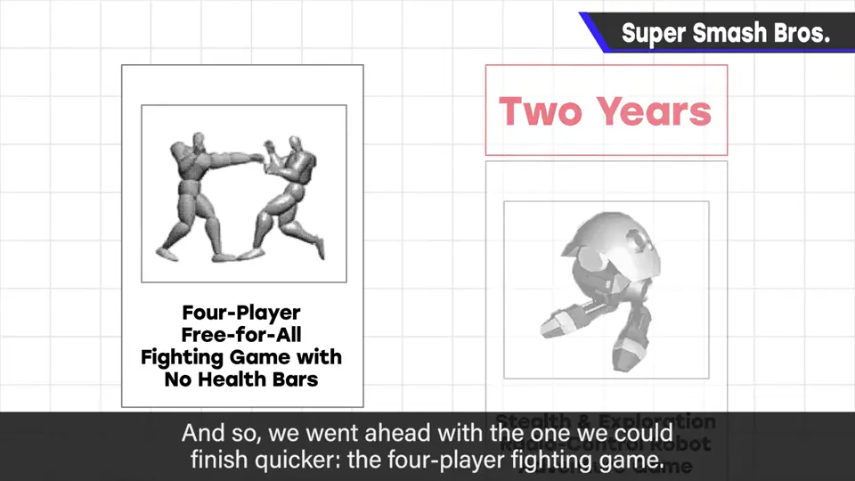
4. 并非否定格斗游戏 3:05
大乱斗常被称为格斗游戏的反命题，但他并不否定格斗游戏：那是博弈发挥到极致、众厂商切磋的类型。
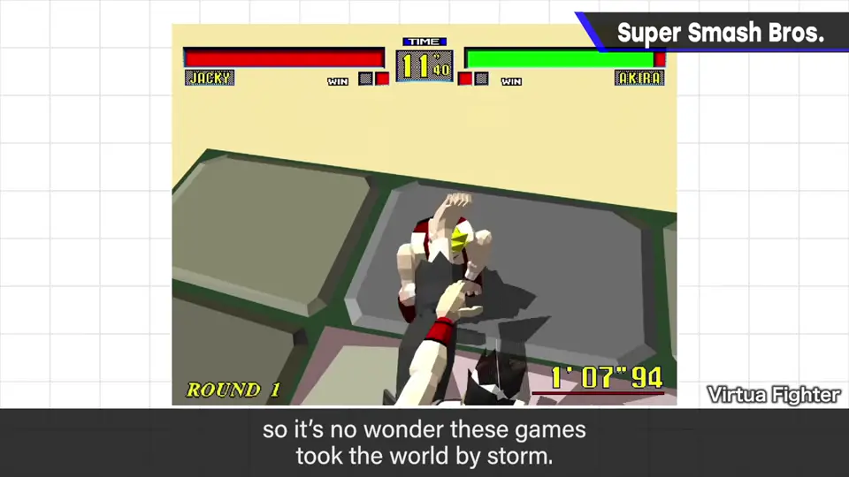
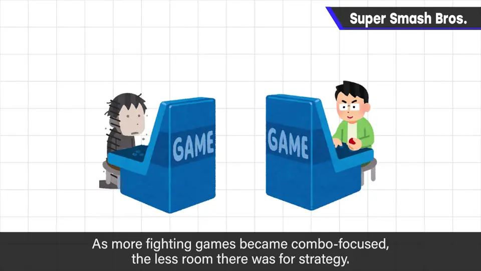
只是他认为连招不是博弈：能否从第一击起接好攻击，这种玩法里没有对手技术的介入。连招重视的游戏增多，新手只能旁观、挨打。
5. 累积伤害系统 4:05
结果诞生了累积伤害系统：对手每次反应都不同；飞出画面，无论伤害多少都输。
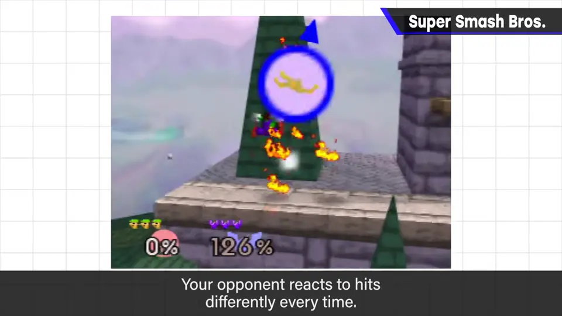
6. 简单直觉的操作 4:24
1996 年格斗游戏的指令输入极度复杂化。他的目标是用「方向+按键」简单直觉地操作。
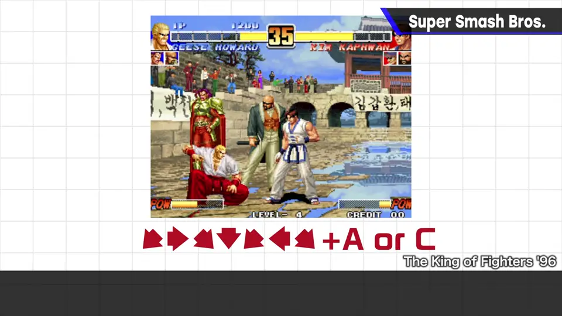
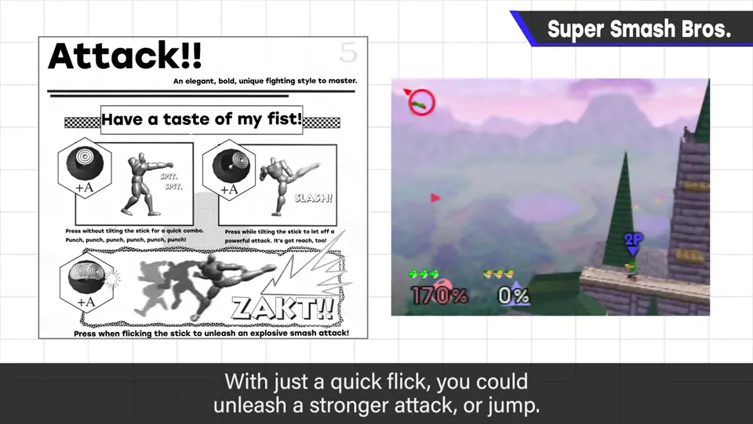
7. 任天堂角色登场 5:14
任天堂各种角色登场是卖点，但这不在企划书上，是后来谈下来的。
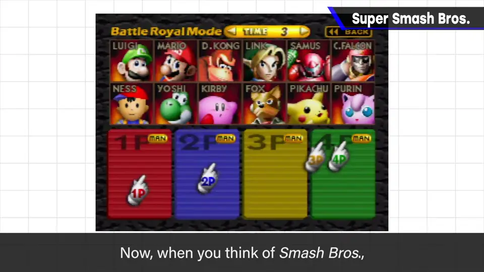
家用格斗的难点：一开始就有一堆主角。像《塞尔达》那样有主角再依次展开配角，形象容易传达；格斗却一上来就有 8 人、12 人。
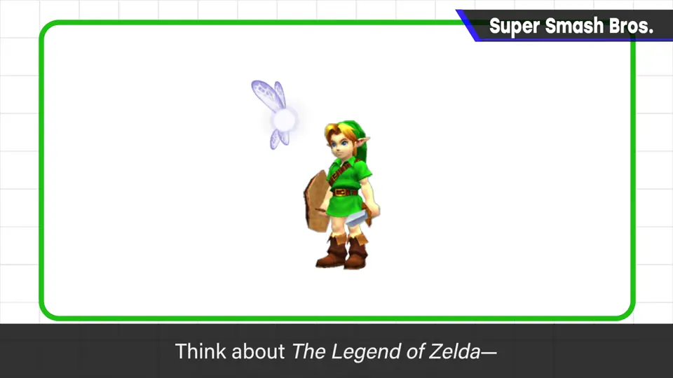
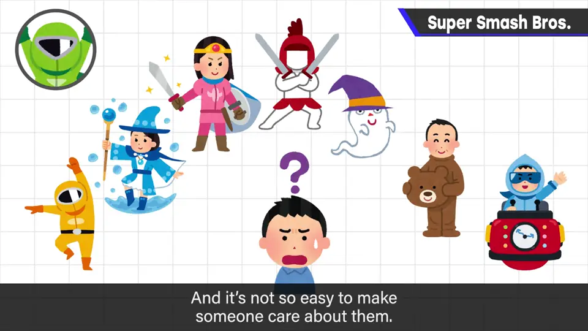
街机还能先玩、看别人玩；家用面对一排陌生新角色的情况，要客观对待。于是借用了任天堂人气角色。
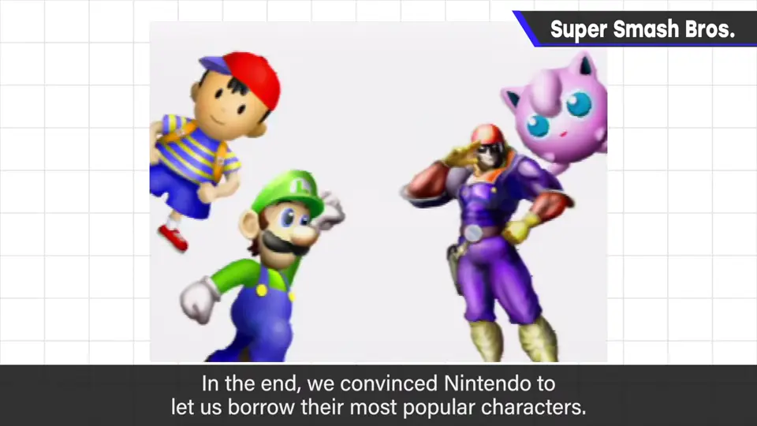
8. 推广的艰难 6:40
完成时，任天堂内外常玩游戏的开发相关人员很喜欢，营业和批发商却拒绝「任天堂角色互殴」——明明还没玩过。熟悉传统格斗的人也难以接受，博弈种类完全不同。
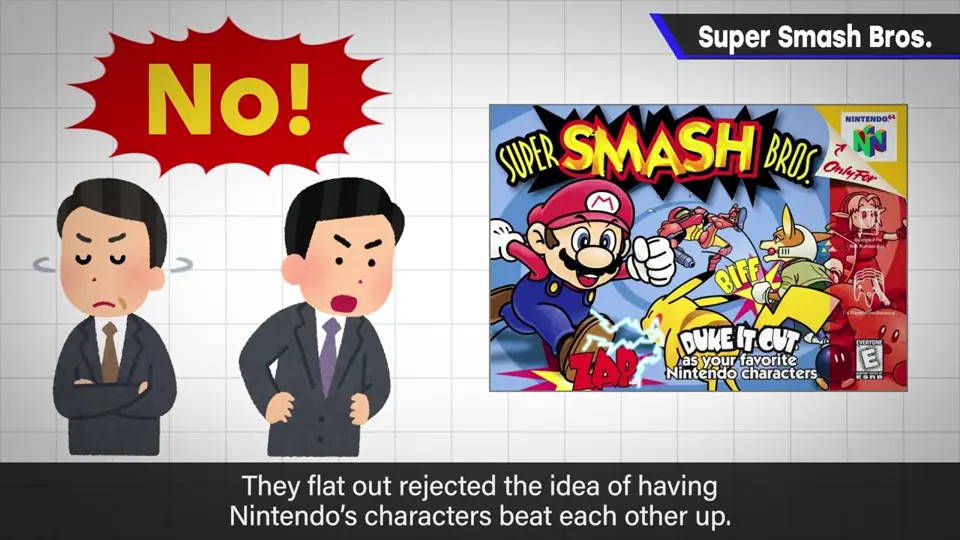
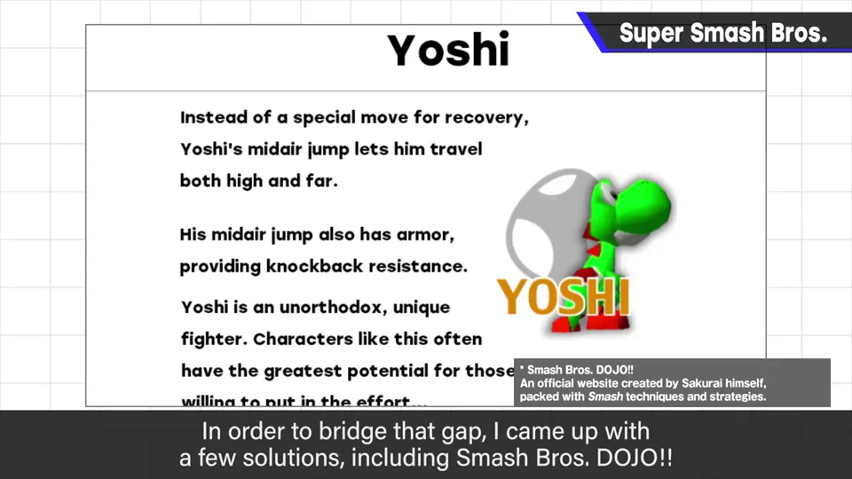
为此做了「大乱斗道场」等补充。发售后口碑叫好、慢慢扩散，结果超出预期。
这也是他首个起用声优的作品，卡比的官方声音在此决定。
9. 想玩什么就怎么玩 7:47
规则可灵活设定：有道具、随机舞台四人混战随便玩，或无道具 1 对 1 认真玩。
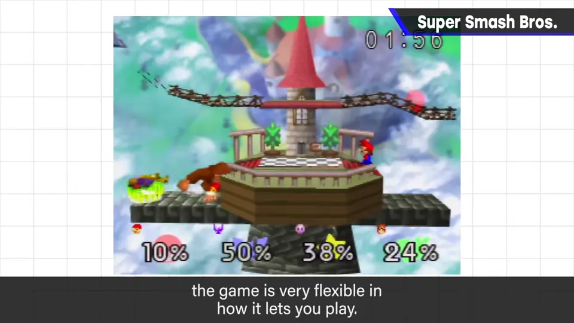
自测题
1. 樱井认为传统格斗游戏的「连招」有什么问题？
连招成立的过程中没有对手技术的介入，不是博弈；新手只能旁观挨打。 3:40
2. 「弹（Smash）输入」着眼于摇杆的什么特性？
输入完成所需的时间（快速倾倒），而非方向或倾斜深度。 4:57
3. 为什么要借用任天堂人气角色？
家用格斗一开始就有大量陌生主角，玩家难以产生亲近感；人气角色能解决这一点。 6:03